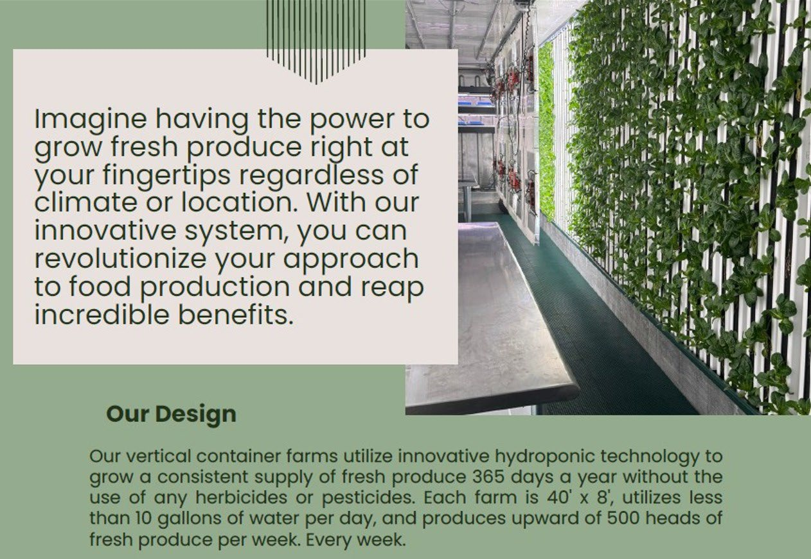
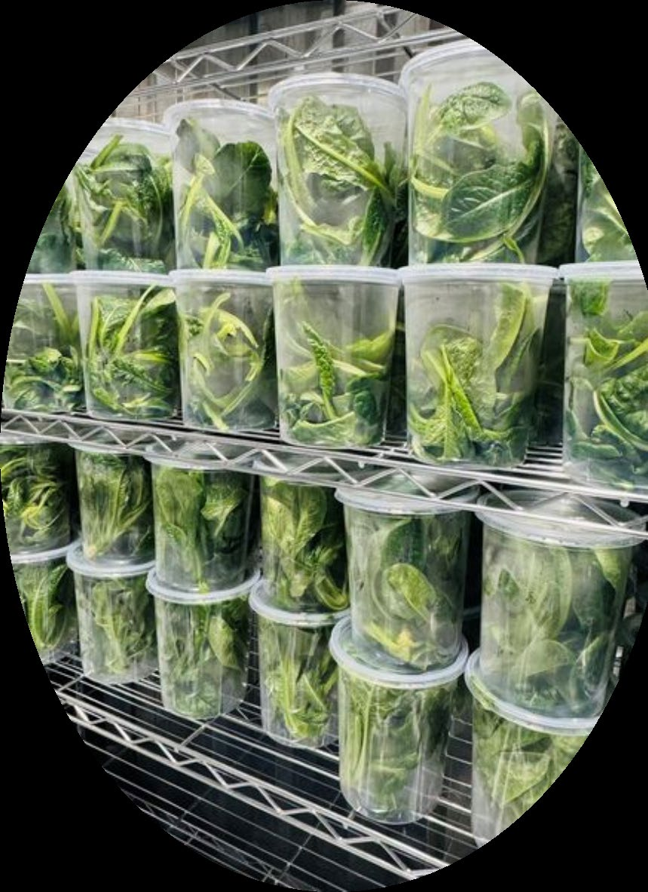
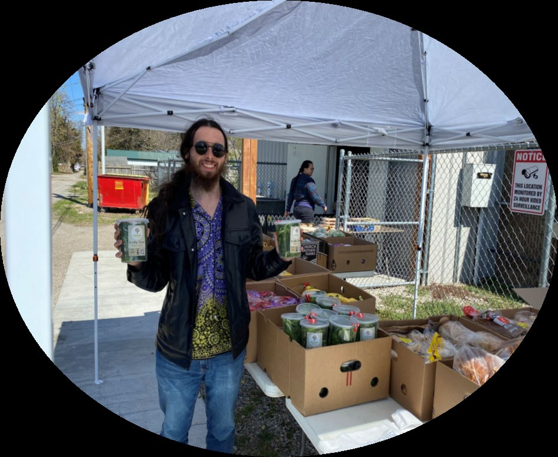

Grow fresh produce close to where it is needed with a container-based hydroponic system designed for consistent production.

The 620 Farms design uses vertical hydroponic technology to grow a consistent supply of fresh produce throughout the year without pesticides or herbicides.
Container farms can support food production, hands-on education and practical controlled-environment agriculture programs.
Use the container footprint efficiently with hydroponic vertical production.
Create a hands-on learning environment for students and community programs.
Bring fresh-produce production closer to where it will be used.




For schools, communities, organizations and controlled-environment agriculture applications.